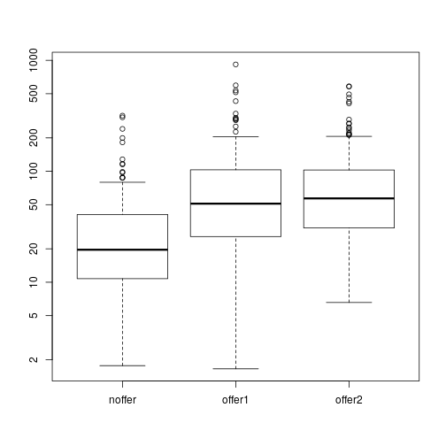
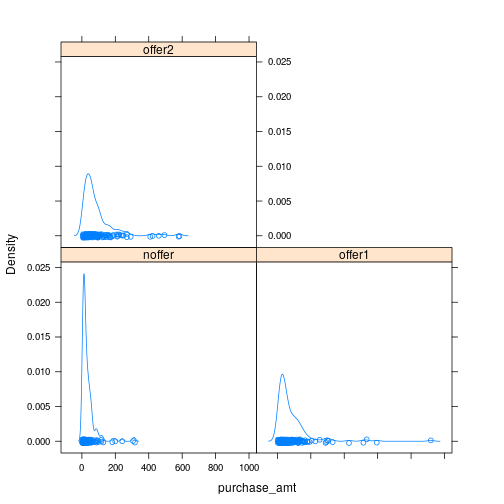

Big Data
Lab 5
FCIS - ASU
Hypothesis Tests and ANOVA
Agenda
- General R commands
- Data Import and Export with R
- Define problem – Analysis of Variance (ANOVA)
- Perform a Hypothesis Test with manual calculations
R studio | New Commands
head(dataframe, n=x)
#Prints the first n lines of a table
tail(dataframe, n=x)
#Prints the last n lines of a table
Try it!
head (ChickWeight, n=10)
tail (ChickWeight, n=10)
summary (Chickweight)
R studio | Practice
Create a copy of the chickweight without the weight column.
nlab1 <- ChickWeight[,2:4]
#Or
nlab1 <- ChickWeight[,-1]
#Or
time <- ChickWeight $Time
chick <- ChickWeight $Chick
diet <- ChickWeight $Diet
nlab1 <- data.frame (time, chick,diet)
R studio | New Commands
dim(nlab1)
# tells us the dimensions of the object
typeof (nlab1)
# tells us the datatype
rm(nlab1)
# removes the object nlab1 from workspace
ls()
# you shouldn’t find nlab1 among the workspace objects.
Data Import and Export with R
- Read data from and write data to
- CSV files
- EXCEL files
- ODBC databases
Practice -1- Read and Write Data from csv file
var1 <- 1:5
var2 <- (1:5)/10
var3 <- c("R", "and", "Data Mining", "Examples", "Case Studies")
df1 <- data.frame(var1, var2, var3)
names(df1) <- c("VarInt", "VarReal", "VarChar")
# save to a csv file
write.csv(df1, “dummmyData.csv", row.names = FALSE)
# read from a csv file
df2 <- read.csv("dummmyData.csv")
print(df2)
Note : Check the working directory and ensure that you have write access to that directory.
You can check this with getwd() ;
Practice -2- Read and Write Data from Excel file
library(xlsx)
write.xlsx(df2, “dummmyData.xlsx”, sheetName = "sheet1", row.names = F)
df3 <- read.xlsx(xlsx.file, sheetName = "sheet1")
df3
Read from Database
Package
RODBC: provides connection to ODBC databases.Function
odbcConnect(): sets up a connection to databasesqlQuery(): sends an SQL query to the databaseodbcClose()closes the connection.
Practice -3- Read from Database
library(RODBC)
db <- odbcConnect(dsn = "servername", uid = "userid",
sql <- "SELECT * FROM lib.table WHERE ..."
myData <- sqlQuery(db, sql, errors=TRUE)
odbcClose(db)
Hypothesis Testing
- A statistical
hypothesisis an assumption about a population parameter. This assumption may or may not be true. Hypothesis testingrefers to the formal procedures used by statisticians to accept or reject statistical hypotheses. The basic concept ofhypothesistesting is to form anassertionand test it with dataNull hypothesis (H0):There is no differenceAlternate hypothesis (H1):There is a difference
Suppose we are evaluating our marketing department’s incentive campaign that is trying to increase the amount of money that customers spend when they visit our online site.
We ran a short experiment, where visitors to our site randomly received one of two incentive offers or got no offer at all.
Generate the Data
offers = sample(c ("noffer", "offer1", "offer2"), size=500, replace=T)
Sample ( x , size , replace=T/F)
x: Either a vector of one or more elements from which to choose size: A non negative integer indicating the number of items to choose Replace :Should the sampling be with replacement
purchasesize = ifelse(offers=="noffer", rlnorm(500, meanlog=log(25)),
ifelse(offers=="offer1", rlnorm(500, meanlog=log(50)), rlnorm(500, meanlog=log(55))))
offertest = data.frame(offer=offers, purchase_amt=purchasesize)
offertest
Examine the Data
summary(offertest)
aggregate(x=offertest$purchase_amt, by=list(offertest$offer), FUN="mean")
This aggregate command does the equivalent of the SQL command “SELECT avg(purchase_amt) FROM offertest GROUP BY offer”,
Results :
## Group.1 x
## 1 noffer 35.74412
## 2 offer1 83.45804
## 3 offer2 90.22404
Plot and determine how purchase size varies within the three groups:
boxplot(purchase_amt ~ as.factor(offers), data=offertest, log="y")

- The ‘log=”y”’ argument plots the y axis on the log scale.
Q ] Does it appear that making
offers increases purchase
amount?
Use aov() to do the ANOVA:
model = aov((purchase_amt ~ offers), data=offertest)
Aov (formula ,data)
Formula :a symbolic description of the model to be fitted .
Data :an optional data frame, list or environment
summary(model)
p-value: area under the tails of the appropriate student's distribution , if p-value is small (say < 0.05), then reject the null hypothesis and assume that m1 <> m2
m1 & m2 are "significantly different”
F = measure for the between group variance divided by the within group variance
Use aov(cont.)
Q1] What is the p-value and the F-value ?
Q2] Can we reject the null hypothesis ?
model = aov((purchase_amt ~ offers), data=offertest)
summary(model)
## Df Sum Sq Mean Sq F value Pr(>F)
## offers 2 274730 137365 16.21 1.51e-07 ***
## Residuals 497 4210398 8472
## ---
## Signif. codes: 0 '***' 0.001 '**' 0.01 '*' 0.05 '.' 0.1 ' ' 1
Use Tukey’s test to check all the differences of means:
Tukey's test: all pair-wise tests for difference of means
TukeyHSD(model)
Q] Did offer1 and offer2 increase purchase size to different amounts (to the p<0.05 significance level)?
Tukeys Test (Cont.)
p-value for offer2-offer1 >0.0.5 , then accept null hypothesis , which means they have similar effect
TukeyHSD(model)
## Tukey multiple comparisons of means
## 95% family-wise confidence level
##
## Fit: aov(formula = (purchase_amt ~ offers), data = offertest)
##
## $offers
## diff lwr upr p adj
## offer1-noffer 47.713923 23.95393 71.47392 0.0000091
## offer2-noffer 54.479924 29.99224 78.96761 0.0000007
## offer2-offer1 6.766001 -16.38136 29.91336 0.7711191
Note : appreciable difference bet. offer1(offer2) & noffer No appreciable difference bet. offer1 & offer2
Use the lattice package for density plot:
The lattice package makes it easy to split data into different groups to highlight the differences between the groups. Here, we split the purchase_amt data by offer, and plot the three offer-specific purchase_amt densityplots on the same graph.
library(lattice) densityplot(~ purchase_amt, group=offers, data=offertest, auto.key=T)
Density Plot Result

Plot the Logarithms of the Data:
- Because the data is so left-skewed, we may want to plot the logarithms of the data to more clearly see the differences in the distributions, and the different locations of the modes
densityplot(~log10(purchase_amt),group=offers,data=offertest,auto.key=T)

Other Plots
densityplot(~purchase_amt | offers, data=offertest)

Other Plots
densityplot(~log10(purchase_amt) | offers, data=offertest)

Generate the example data to perform a Hypothesis Test with manual calculations:
Hopefully, you won’t have to do this too often. Most statistical packages have functions that calculate a test statistic and evaluate it against the proper distribution, for the most common hypothesis tests.
On occasion, you may need to calculate the p-values yourself. For our example, we will calculate the Student’s t-test for difference of means (unlike Welch’s test, Student’s t-test assumes identical variances), under the alternative hypothesis that the means are not equal .
Create a function to calculate the pooled variance, which is used in the Student’s t statistic:
x = rnorm(10) # distribution centered at 0
y = rnorm(10,2) # distribution centered at 2
pooled.var = function(x, y) {
nx = length(x)
ny = length(y)
stdx = sd(x)
stdy = sd(y)
num = (nx-1)*stdx^2 + (ny-1)*stdy^2
denom = nx+ny-2 # degrees of freedom
(num/denom) * (1/nx + 1/ny)
}
Examine the data
mx = mean(x)
my = mean(y)
mx - my
## [1] -2.244543
pooled.var(x,y)
## [1] 0.3462188
Calculate the t statistic for Student's t-test:
tstat = (mx - my)/sqrt(pooled.var(x,y))
tstat
## [1] -3.814631
Perform Student’s t-test directly and compare the results:
t.test(x, y, var.equal=T)
##
## Two Sample t-test
##
## data: x and y
## t = -3.8146, df = 18, p-value = 0.001269
## alternative hypothesis: true difference in means is not equal to 0
## 95 percent confidence interval:
## -3.480733 -1.008353
## sample estimates:
## mean of x mean of y
## -0.2479934 1.9965491
Q] Does t.test() give the same results?
Yes , - 3.802185
علم + عمل + أخلاق = حضارة
Thanks for coming!

Eslam Ali Data Scientist